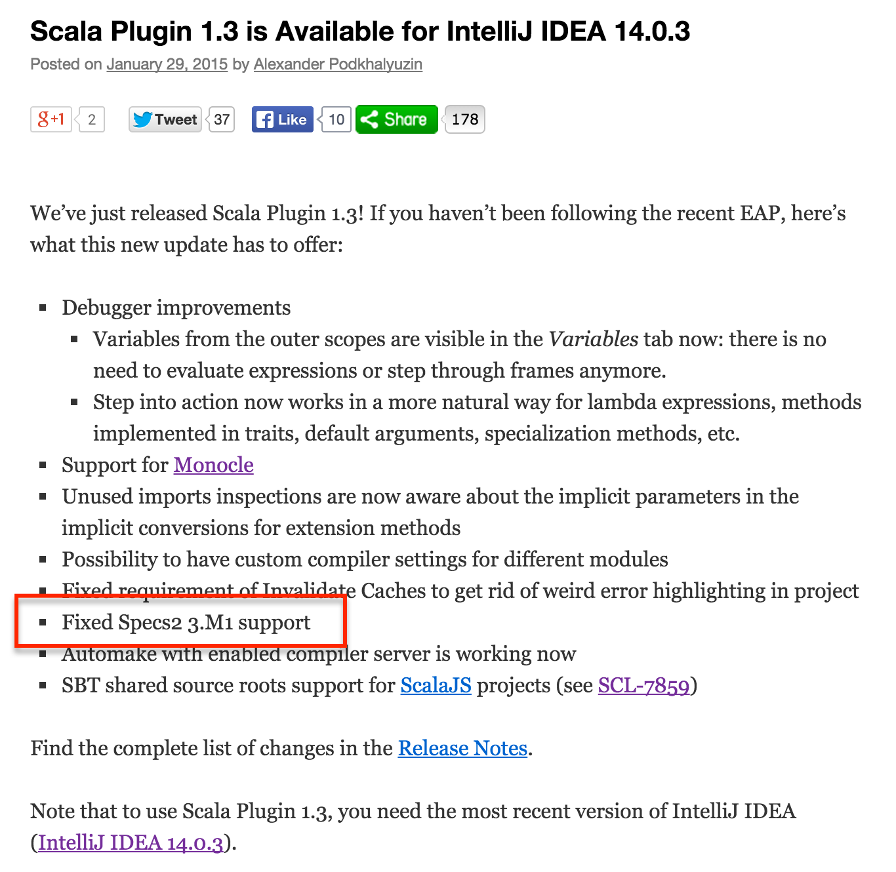
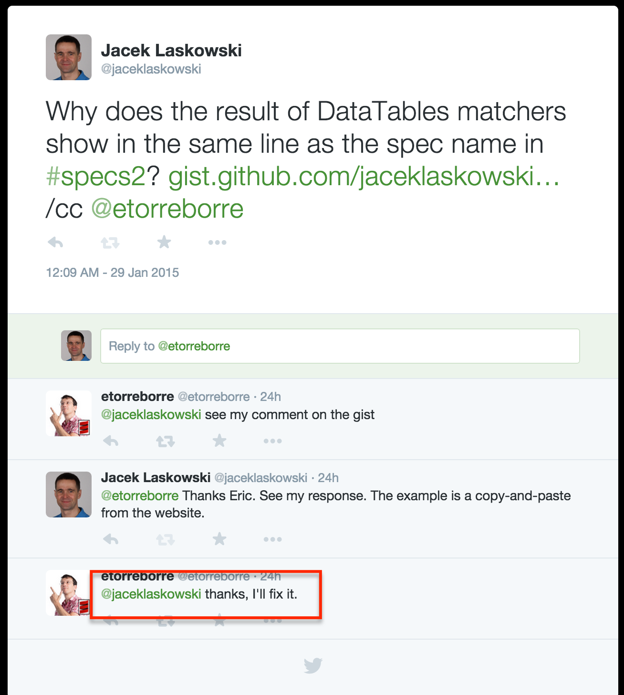
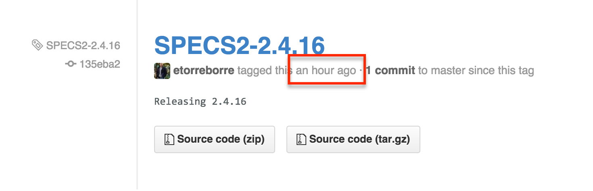
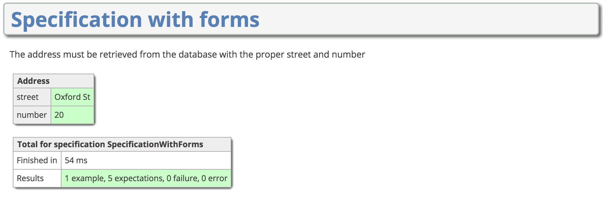

Delivered by Jacek Laskowski / @jaceklaskowski



import org.specs2._
class DataTableSpec extends Specification with matcher.DataTables { def is = s2"""
adding integers should just work in scala $e1
"""
def e1 =
"a" | "b" | "c" | // the header of the table, with `|` separated strings
2 ! 2 ! 4 | // an example row
1 ! 1 ! 2 |> { // the > operator to "execute" the table
(a, b, c) => a + b === c // the expectation to check on each row
}
}
"a" | "b" | "c" |
2 ! 2 ! 4 |
1 ! 1 ! 2 |> { (a, b, c) => a + b === c }
"a" | "b" | "c" | "a" | "b" | "c" | "a" | "b" | "c" | "a" |
1 ! 1 ! 2 ! 2 ! 2 ! 4 ! 2 ! 2 ! 4 ! 2 |> {
(a1, a2, a3, a4, a5, a6, a7, a8, a9, a10) => ok
}
[info] DataTableSpec
[info]
[info] x adding integers should just work in scala
[error] | a | b | c |
[error] + | 2 | 2 | 4 |
[error] x | 1 | 1 | 3 | '2' is not equal to '3' (DataTableSpec.scala:13)
[info]
[info]
[info] Total for specification DataTableSpec
[info] Finished in 32 ms
[info] 1 example, 1 failure, 0 error
[info] DataTableSpec
[info]
[info] + adding integers should just work in scala
[info]
[info] Total for specification DataTableSpec
[info] Finished in 26 ms
[info] 1 example, 0 failure, 0 error
def t2 =
"a" | "b" | "c" |
1 ! 1 ! 2
def p2(a: Int, b: Int, c: Int) = success
def e2 = t2 |> p2
import org.specs2._
class AutoExampleSpec extends Specification { def is = s2"""
The `capitalize` method verifies
${ "hello".capitalize === "Hello" }
${ success }
"""
}
capitalize and ===success from specs2
s2"""
The `capitalize` method verifies
${ "hello".capitalize === "Hello" }
${ success }
"""
[info] AutoExampleSpec
[info]
[info] The `capitalize` method verifies
[info] + "hello".capitalize === "Hello"
[info] + success
[info]
[info] Total for specification AutoExampleSpec
[info] Finished in 35 ms
[info] 2 examples, 0 failure, 0 error
build.sbt
resolvers += "Scalaz Bintray Repo" at "http://dl.bintray.com/scalaz/releases"
libraryDependencies += "org.specs2" %% "specs2-form" % "3.0" % "test"
import org.specs2._
import form.Form
class SpecificationWithForms extends Specification with specification.Forms { def is = s2"""
The address must be retrieved from the database with the proper street and number
${Form("Address").
tr(prop("street", actualStreet(123), "Oxford St")).
tr(prop("number", actualNumber(123), 20))}
"""
def actualStreet(no: Int) = "Oxford St"
def actualNumber(no: Int) = 20
}
[info] SpecificationWithForms
[info]
[info] The address must be retrieved from the database with the proper street and number
[info] + | Address |
[info] | street: Oxford St |
[info] | number: 20 |
[info]
[info] Total for specification SpecificationWithForms
[info] Finished in 0 ms
[info] 1 example, 5 expectations, 0 failure, 0 error
Formatting is not an issue since the aim is the HTML page.

build.sbt
resolvers += "Scalaz Bintray Repo" at "http://dl.bintray.com/scalaz/releases"
libraryDependencies += "org.specs2" %% "specs2-scalacheck" % "3.0" % "test"
import org.scalacheck.{Gen, Arbitrary}
import org.specs2._
import org.scalacheck.Prop._
class ScalaCheckSpec extends Specification with ScalaCheck { def is = s2"""
A ScalaCheck property inside example ${ forAll { (i: Int) => i > 0 || i <= 0 } }
A `prop` method to create a property from a function
returning a match result
${ prop { (i: Int) => i must be_>(0) or be_<=(0) } }
returning a boolean value
${ prop { (i: Int) => i > 0 || i <= 0 } }
using an implication and a boolean value
${ prop { (i: Int) => (i > 0) ==> (i > 0)}}
Custom `Arbitrary` instance for a parameter ${ prop { (i: Int) => i must be_>(0) }.setArbitrary(positiveInts) }
Custom minimum number of ok tests ${ prop { (i:Int) => (i > 0) ==> (i > 0) }.set(minTestsOk = 50) }
"""
val positiveInts = Arbitrary(Gen.choose(1, 5))
}
Note the 6 examples only.
[info] ScalaCheckSpec
[info]
[info] + A ScalaCheck property inside example
[info]
[info] A `prop` method to create a property from a function
[info] returning a match result
[info] + prop { (i: Int) => i must be_>(0) or be_<=(0) }
[info] returning a boolean value
[info] + prop { (i: Int) => i > 0 || i <= 0 }
[info] using an implication and a boolean value
[info] + prop { (i: Int) => (i > 0) ==> (i > 0)}
[info]
[info] + Custom `Arbitrary` instance for a parameter
[info] + Custom minimum number of ok tests
[info]
[info] Total for specification ScalaCheckSpec
[info] Finished in 111 ms
[info] 6 examples, 550 expectations, 0 failure, 0 error
6 examples make for 550 expectations!
Wait! Why are there 550 expectations, not 600?
class ScalaCheckSpec extends Specification with ScalaCheck { def is = s2"""
startsWith ${ prop { (a: String, b: String) => (a+b) must startWith(a) } }
"""
}
Result to the prop method.build.sbt
resolvers += "Scalaz Bintray Repo" at "http://dl.bintray.com/scalaz/releases"
libraryDependencies += "org.specs2" %% "specs2-html" % "3.0" % "test"
➜ specs2-sandbox sbt "testOnly SpecificationWithForms -- html"
[info] Loading global plugins from /Users/jacek/.sbt/0.13/plugins
[info] Loading project definition from /Users/jacek/dev/sandbox/specs2-sandbox/project
[info] Set current project to specs2-sandbox (in build file:/Users/jacek/dev/sandbox/specs2-sandbox/)
[error] the pandoc executable is not available at: pandoc
[error] Error: Total 1, Failed 0, Errors 1, Passed 0
[error] Error during tests:
[error] SpecificationWithForms
[error] (test:testOnly) sbt.TestsFailedException: Tests unsuccessful
[error] Total time: 1 s, completed Mar 6, 2015 11:49:19 PM
Mind the errors when the pandoc executable is not available at: pandoc
http://johnmacfarlane.net/pandoc/ - a universal document converter
➜ specs2-sandbox sbt "testOnly SpecificationWithForms -- html"
[info] Loading global plugins from /Users/jacek/.sbt/0.13/plugins
[info] Loading project definition from /Users/jacek/dev/sandbox/specs2-sandbox/project
[info] Set current project to specs2-sandbox (in build file:/Users/jacek/dev/sandbox/specs2-sandbox/)
[info] Passed: Total 0, Failed 0, Errors 0, Passed 0
[success] Total time: 1 s, completed Mar 6, 2015 11:54:35 PM
➜ specs2-sandbox open target/specs2-reports/SpecificationWithForms.html
This is the same HTML page as shown before.
(With explicit auto-generated example names)
import org.specs2._
import specification.Grouped
class GroupedSpecification extends Specification with Grouped { def is = s2"""
first example in first group ${g1.e1}
first example in second group ${g2.e1}
first example in third group ${g3.e1}
"""
}
Note no e1's in each group!
[info] GroupedSpecification
[info]
[info] * first example in first group - PENDING
[info] * first example in second group - PENDING
[info] * first example in third group - PENDING
[info]
[info] Total for specification GroupedSpecification
[info] Finished in 6 ms
[info] 3 examples, 0 failure, 0 error, 3 pending
All pending examples are marked as PENDING.
import org.specs2._
import specification._
class BulletedExamplesSpec extends Example { def is = """
This is an introduction
First section
=============
A bit more text there.
+ and the first example
+ and the second example
"""
}
trait Example extends script.Specification with Groups {
"first section" - new group {
eg := failure
}
}
Note no code (example) in specification!
[info] BulletedExamplesSpec
[info]
[info] This is an introduction
[info]
[info] First section
[info] =============
[info]
[info] A bit more text there.
[error] x and the first example
[error] failure - g1.e1 (BulletedExamplesSpec.scala:18)
[info]
[info] * and the second example - PENDING - g1.e2
[info]
[info] Total for specification BulletedExamplesSpec
[info] Finished in 9 ms
[info] 2 examples, 1 failure, 0 error, 1 pending
All pending examples are marked as PENDING.
Run a specific example or group of examples by name
[specs2-sandbox]> testOnly BulletedExamplesSpec -- include g1.e1
[error] x and the first example
[error] failure - g1.e1 (BulletedExamplesSpec.scala:18)
[info] BulletedExamplesSpec
[info]
[info] Total for specification BulletedExamplesSpec
[info] Finished in 9 ms
[info] 1 example, 1 failure, 0 error
[specs2-sandbox]> testOnly BulletedExamplesSpec -- include g1.e2
[info] BulletedExamplesSpec* and the second example - PENDING - g1.e2
[info]
[info] Total for specification BulletedExamplesSpec
[info] Finished in 7 ms
[info] 1 example, 0 failure, 0 error, 1 pending
script.Specification and Groups traits.is method.group.eg.+ are examples